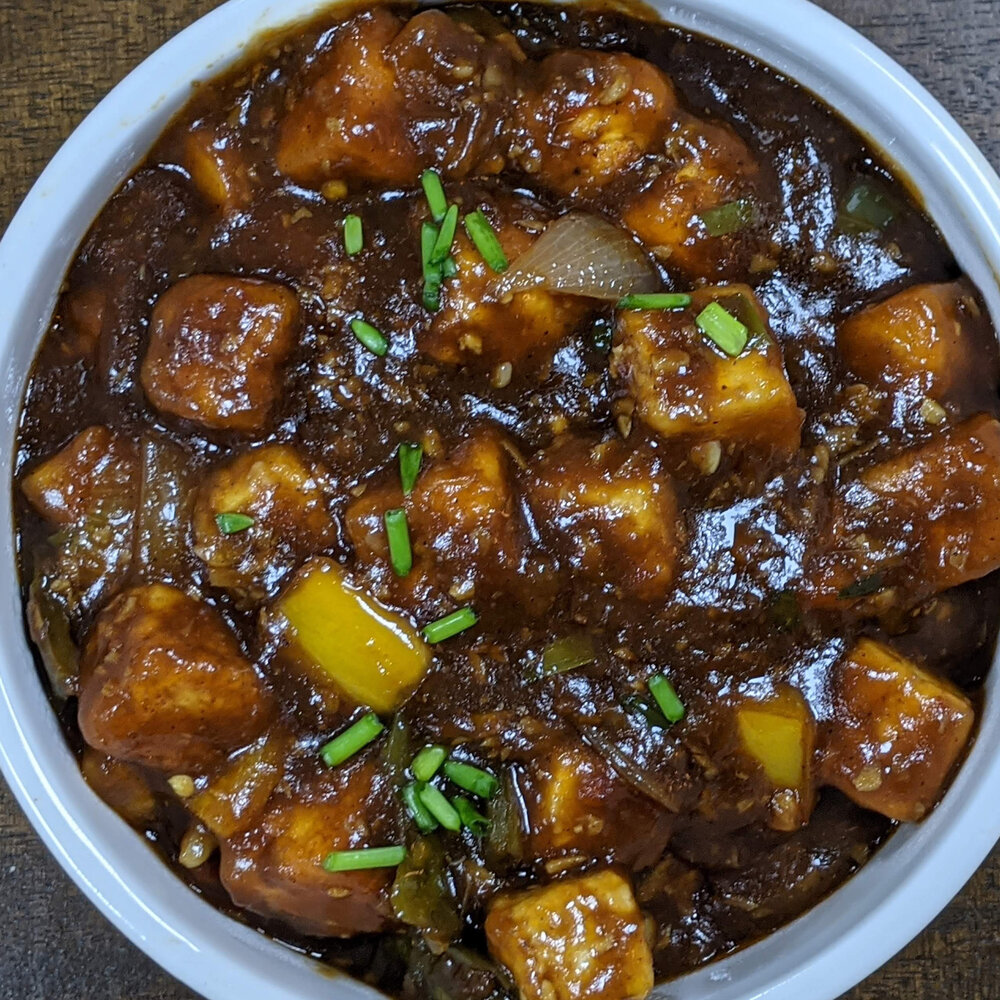

Paneer Chilli

Enjoy this flavour-packed chilli paneer with rice and your favourite vegetarian sides for a delicious, lightly spiced dinner for two
Ingredients
- 4 tbsp vegetable oil
- 2 tbsp cornflour
- 2 tbsp plain flour
- ½ tsp Kashmiri chilli powder
- 226g paneer, cut into 1cm cubes
- 1 spring onion, finely sliced
- 1 red onion, roughly chopped
- 1 green pepper, deseeded and roughly chopped
- 1 tbsp dark soy sauce
- 1½ tbsp ketchup
- 25g ginger, peeled and finely grated
- 4 garlic cloves, crushed
- 1 green chilli, finely chopped (deseeded if you like)
Steps
- Heat the vegetable oil in a large non-stick pan over a medium heat. Combine the cornflour, plain flour, chilli powder, 1 tsp fine sea salt, ½ tsp freshly ground black pepper and 2 tbsp water in a bowl until you have a smooth paste, adding a splash more water if it's too thick. Add the paneer cubes and toss to coat. Carefully tip the coated paneer into the hot oil in the pan and fry, stirring, until crisp and browned on all sides. Transfer to a plate lined with kitchen paper, and set aside.
- To make the sauce, tip the cornflour into a jug and gradually whisk in the soy sauce until smooth. Add the chilli sauce, ketchup, rice vinegar, honey and 90ml water, then whisk again and set aside. Drain most of the excess oil from the pan and return to a medium heat. Fry the ginger, garlic and chopped chilli for a few minutes until fragrant. Stir in the chilli powder, onion and pepper, turning up the heat to medium-high, and fry until lightly browned. Tip in the soy sauce mixture bubble until thickened slightly.
- Remove from the heat and stir in the paneer, ensuring it's well-coated in the sauce. Add a splash more water if needed, and season to taste. Sprinkle over the spring onion and serve with rice, if you like.
Return to the main page